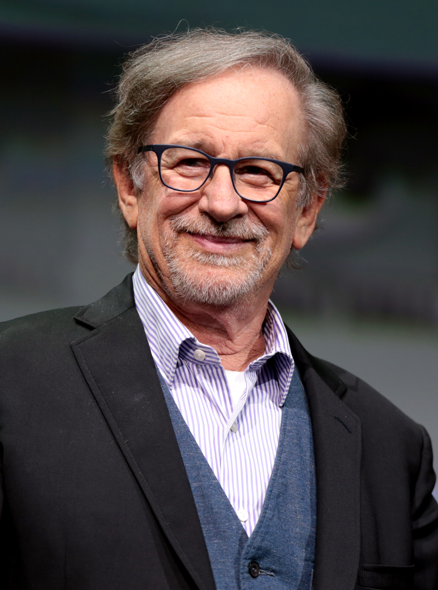

Acción
Comedia
Ciencia Ficción
-
Directores
Steven Spilberg
Quentin Tarantino
Martin Scorsese
-
Directores


Steven Spilberg
Es un director, guionista y productor de cine estadounidense.
Se lo considera uno de los pioneros de la era del Nuevo Hollywood y es también uno de los directores más
reconocidos y populares de la industria cinematográfica mundial. En sus películas, Spielberg ha tratado temas y
géneros muy diversos. Sus primeros filmes de ciencia ficción y aventuras, como Tiburón (1975), Close Encounters of the Third Kind (1977),
la franquicia de Indiana Jones y E.T., el extraterrestre (1982), son considerados arquetipos del cine de evasión del Hollywood moderno.
Candidato siete veces a los Premios Óscar en la categoría de mejor director, obtuvo el premio en dos ocasiones,
con La lista de Schindler (1993) y Saving Private Ryan (1998). Tres de sus películas (Tiburón, E.T., E
l extraterrestre y Parque Jurásico) lograron ser las películas de mayor recaudación en su momento y se convirtieron en verdaderos fenómenos de masas.
Ha sido también condecorado con la Orden del Imperio Británico y la Medalla Nacional de Humanidades. Aficionado al cómic,
tiene una gran colección Las ganancias de sus películas en todo el mundo, sin ajustar precios a la inflación, superan los diez
mil millones de dólares, lo que convierte a Spielberg en el director de cine con mayor recaudación de la historia.
| 
| | ||